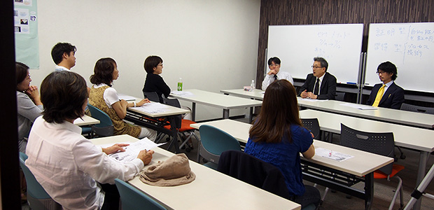
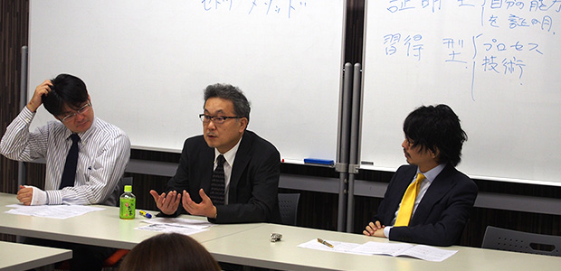

昨日は教育研究所ARCS主催「月イチお話会」の日でした。今年二月に始まったこの会も、気がつけば早５回目。本当に月日がたつのは早いものです。
今回のテーマは「勉強できる子の親、四つのタイプ」。
日々多くの生徒を教えていると、成績がよい生徒にはいくつかのタイプがあり、またその保護者の方にもいくつかの特定のタイプがあることに気づきます。今回は特に保護者の方のタイプに焦点を当て、それぞれが生徒に与える影響についてお話をしました。
生徒を親の意思に従わせようとする管理型と、生徒に好きにさせる自由尊重型。この大きな二つのタイプをさらに二つに分けていくと、多くの保護者の方がそのいずれかに当てはまります。タイプのそれぞれには功罪がありますが、最終的には研究所ARCSが推奨するタイプと、そのタイプになるための方法をご説明しました。

かなり”コア”な、親の「生き方」そのものに関わる話もでましたが、代表管野が子育ての実体験から面白おかしく伝えたこともあり、笑いが何度も起こる和やかな会となりました。7月も引き続き子育てをテーマにお話をしていきますので、ぜひふるってご参加ください！